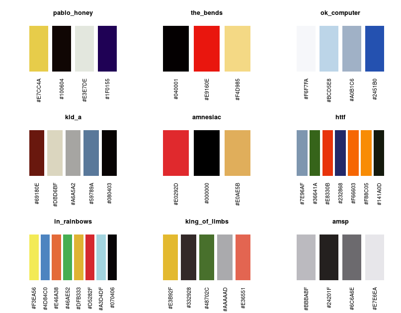
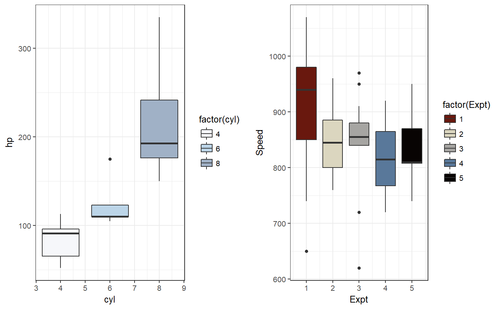

Radiohead album colour palettes. I thought i'd like to have a go at producing some R colour palettes based on Radiohead album art. I got the idea from the briliant wesanderson library (https://github.com/karthik/wesanderson). I'm using this project as both an opportuity to learn how to use GitHub whilst simultaneously learning about colour spaces and their implementation in R.
scale_colour_inRainbows(..., option = "pablo_honey") scale_fill_inRainbows(..., option = "pablo_honey")
| ... | Other arguments passed on to [discrete_scale()] to control name, limits, breaks, labels and so forth. |
|---|---|
| option | Album name to use for colour scale. See Details. |
Here are the color scales: 
library(ggplot2)#> #>p1 <- ggplot(mtcars, aes(x = cyl, y = hp, group = cyl, fill = factor(cyl))) + geom_boxplot() + scale_fill_inRainbows(option = "ok_computer") + theme_bw() p2 <- ggplot(morley, aes(x = Expt, y = Speed, group = Expt, fill = factor(Expt))) + geom_boxplot() + scale_fill_inRainbows(option = "kid_a") + theme_bw() gridExtra::grid.arrange(p1,p2, nrow=1)